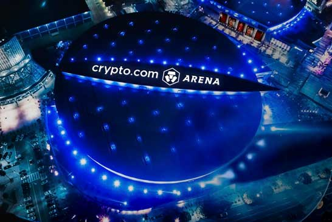
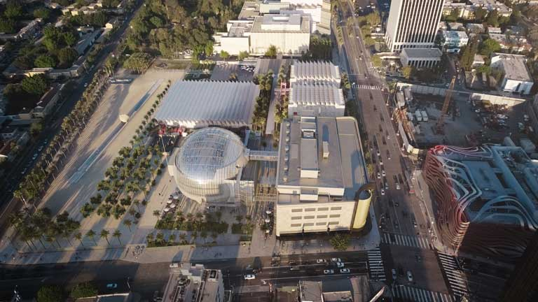
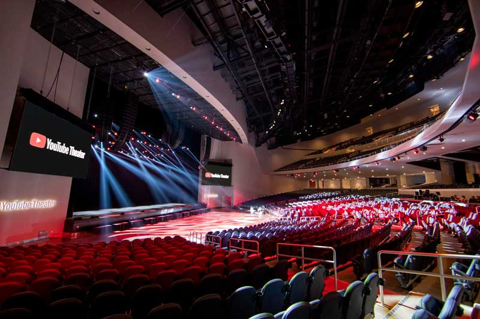

Noticias
Aquí les informaremos de las noticias mas relevantes de los últimos días de la ciudad de Los Ángeles.
Adiós, Staples Center. Hola, Crypto.com Arena
El mítico estadio de la NBA y sede de múltiples eventos, cambiará su nombre a Crypto.com Arena el 25 de diciembre de este año.

Representación del Crypto.com Arena vista desde arriba
La sede del centro de Los Ángeles, hogar de los Lakers, Clippers, Kings y Sparks, llevará el nuevo nombre durante 20 años en virtud de un acuerdo entre el intercambio de criptomonedas de Singapur y AEG, el propietario y operador de la arena, anunciaron ambas partes el martes. Crypto.com pagó más de 700 millones de dólares por los derechos de nombres, según fuentes familiarizadas con los términos, lo que lo convierte en uno de los acuerdos de nombres más importantes en la historia del deporte.
El director ejecutivo de Crypto.com, Kris Marszalek, espera que el nuevo nombre llegue a ser visto como una señal de los tiempos.
El nuevo logotipo de la arena debutará el 25 de diciembre, cuando los Lakers reciban a los Brooklyn Nets, y toda la señalización del Staples Center será reemplazada por el nuevo nombre en junio de 2022. “En los próximos años, la gente recordará este momento como el momento en el que las criptomonedas cruzaron el abismo hacia la corriente principal”, dijo Marszalek cuando lo llamaron a su casa en Hong Kong.
El presidente ejecutivo, Dan Beckerman, dijo que una compañía financiera blockchain era lo ideal para el centro de Los Ángeles. “Es una combinación hecha en el cielo, cuando pensamos en el tipo de marcas con las que nos gusta asociarnos”, dijo Beckerman. “Crypto.com está buscando la plataforma de marca más exclusiva para hacer una declaración e impulsar la adopción, y estamos buscando una empresa innovadora y con visión de futuro que nos ayude a trazar un rumbo para el futuro de los eventos deportivos y de entretenimiento”.
Hollywood inaugura el museo del cine que soñaba hace 90 años

El Academy Museum of Motion Pictures abre sus puertas el 30 de septiembre, en Los Ángeles
Desde que la Academia de Hollywood inició su andadura en 1927 uno de sus objetivos, además de entregar los Óscar, fue inaugurar un museo dedicado al cine que abrirá sus puertas más de 90 años después con un espectacular edificio diseñado por el arquitecto Renzo Piano. Aunque otras ciudades del mundo como París, Pekín y Turín (Italia) cuentan desde hace años con museos dedicados al cine, Los Ángeles, la capital del séptimo arte, carecía del suyo.
"Sabemos que se convertirá en un símbolo instantáneo de Los Ángeles. Una visita obligada", afirmó el director de la nueva institución, Bill Kramer, en la presentación de un museo que costó 400 millones de dólares.
El centro abrirá al público el 30 de septiembre y muestra lo más destacado de una colección incomparable: 12 millones de fotografías, 190.000 artículos de cintas clásicas, 80.000 guiones, 50.000 pósteres y 20.000 diseños y bocetos.
Hay objetos pertenecientes a Cary Grant, Katharine Hepburn, Alfred Hitchcock y John Huston, recreaciones de escenarios míticos y artilugios originales de películas como "Star Wars", "The Wizard of Oz" y "La La Land".
YouTube abrirá un teatro en Los Ángeles para 6.000 personas

La plataforma de videos YouTube, propiedad de Google, tendrá un teatro propio con capacidad para 6.000 personas en Los Ángeles, en el que presentará eventos de entretenimiento en vivo y encuentros de creadores de contenido de su sitio web con sus seguidores, entre otras iniciativas.
Además, el espacio también pretende ser una sede de competiciones de deportes electrónicos, entregas de premios, conciertos y otros eventos, de acuerdo con un comunicado de la empresa con sede en California.
En el documento, la vicepresidenta de mercadeo de la compañía, Angela Courtin, explicó que el Teatro YouTube "combinará eventos físicos en la vida real que unirán a creadores y fanáticos, mientras comparten la misma experiencia con 2.000 millones de usuarios globales mensuales a través de transmisiones en vivo" en la propia plataforma.
El lugar, que se inaugurará a mediados de verano en Inglewood, una zona próxima al aeropuerto de Los Ángeles, está cerca del estadio SoFi, sede de los equipos de fútbol americano Los Angeles Rams y Los Angeles Chargers.
El TeatroYoutube, que tendrá tres pisos, forma parte de un acuerdo por diez años entre el portal de vídeos y Hollywood Park, aunque los detalles financieros del pacto no fueron revelados, de acuerdo al diario local Los Angeles Times.
Más allá de acoger eventos, la intención de YouTube con este edificio es seguir creando comunidad en la ciudad angelina, según la empresa. El aumento de la publicidad en internet a raíz de la pandemia de la covid-19 está teniendo un gran beneficiario, Alphabet, matriz de Google, que empezó 2021 igual que terminó 2020: con unos beneficios disparados y que casi ha triplicando los conseguidos hace un año.